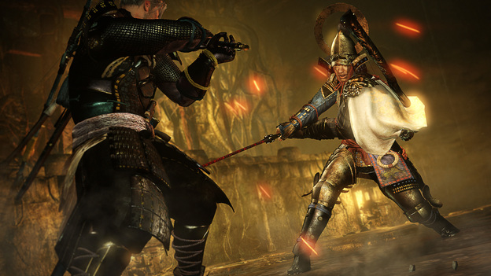
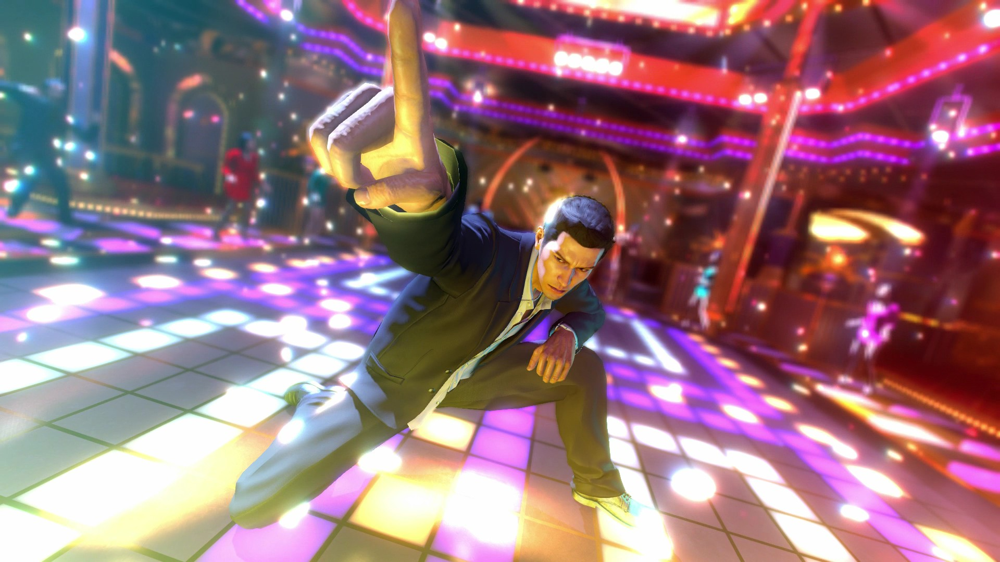

NIOH
Nioh’s pedigree is rich in elements borrowed from several similar titles, including Bloodborne and Dark Souls, but it ultimately fails to differentiate itself when all is said and done. The Japanese-themed samurai story is intriguing upon initial glance, especially with it’s seemingly extended replay value. However, when you start to peel back the layers and get into the thick of things, you’re left with a shell of its predecessors and superficial title that couldn’t possibly hold a candle to even the least of them.
My initial first impression of Nioh was a mixture of curious intrigue that quickly faded into uninspired frustration. Taking control of an imprisoned William Adams within a maze of an old prison in London sparked my curiosity. Your first task is to break out of your prison cell and battle the first few guards barehanded until you can obtain one of their weapons. Needless to say, I died several times before figuring out what the button combinations were and how to actually equip a sword once one was obtained. This “thrown in the fire without any direction” setup is very risky, but is immensely rewarding when pulled off correctly. Unfortunately, Nioh is not one of those games that does it well.

It took several hours before Nioh provided any type of tutorial explaining how to navigate the world, use weapon attacks, or equip and use items. In fact, we don’t quite figure out the purpose for playing until we’re deeply invested. This was incredibly frustrating as I attempted to work my way through each new portion of the game. This type of methodology makes sense on paper; break down your user until there’s literally nothing left, then blow their minds when they overcome adversity. Unfortunately, this game just doesn’t offer the type of satisfaction the developers were hoping for. Rather, it leaves you wondering why you’re still holding onto the controller and navigating through this maze of irritation.
Nioh is defined more by its inability to truly connect with gamers looking for a creative challenge, rather than its desire to be placed within the ranks of titles like Bloodborne and Diablo. The game’s grindy premise has been exhausted for what seems like decade and will leave you feeling more defeated than anything else. The combat mechanics are certainly worth noticing, but the environment restricts them, making it a wash. Do yourself a favor and pass on this compilation of recycled concepts and frustrating gameplay.
Other Reviews
RESIDENT EVIL 7: BIOHAZARD

HORIZON ZERO DAWN

YAKUZA 0
DEUS EX